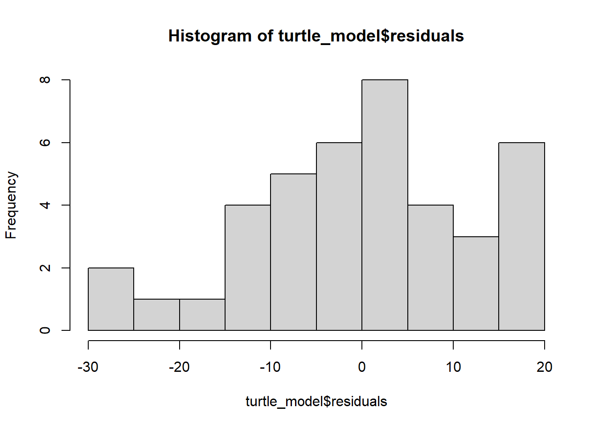

linear models
Linear models can be used to run regressions (where the response and predictor are both continuous) or t-tests and ANOVAs (where the response is continuous and the predictor is a factor.)
Alternative terminology - another name for a response is the dependent variable. Predictors are sometimes called explanatory, independent variables or factors.
1 Continuous Response, Continuous Predictor (Regression)
A regression is just a special case of a linear model, where both the response and predictor variables are continuous.
The relationship between a response (also called dependent) variable \(y\) and one or more predictor variables \(x_{1}\),\(x_{2}\)…\(x_{n}\) is modelled. For example, we could use linear regression to test whether temperature (the predictor variable) effects plant height (the response variable).

Follow this link to a data set on plant heights around the
world, Plant_height.csv. Right
click to “Save as” in your Rproj data folder and import
into R.
Plant_height <- read.csv(file = "data/Plant_height.csv", header = TRUE)It is useful to first visualise our data. For two continuous
variables use a scatterplot. loght is log of height.
temp is temperature.
library(ggplot2)
ggplot(aes(x = temp, y = loght), data = Plant_height) +
geom_point()1.1 Running the analysis
In R you can fit linear models using the function
lm.
lm(loght ~ temp, data = Plant_height)The response variable loght goes before the tilde. After
the tilde we list the predictor variables, only temp in
this case.
The data = argument specifies the data frame from which
the variables will be taken.
To obtain detailed output (e.g., coefficient values, R2,
test statistics, p-values, confidence intervals etc.), assign
the output of the lm function to a new object in R. Then
pass that new model object through the summary
function.
model <- lm(loght ~ temp, data = Plant_height)
summary(model)##
## Call:
## lm(formula = loght ~ temp, data = Plant_height)
##
## Residuals:
## Min 1Q Median 3Q Max
## -1.97903 -0.42804 -0.00918 0.43200 1.79893
##
## Coefficients:
## Estimate Std. Error t value Pr(>|t|)
## (Intercept) -0.225665 0.103776 -2.175 0.031 *
## temp 0.042414 0.005593 7.583 1.87e-12 ***
## ---
## Signif. codes: 0 '***' 0.001 '**' 0.01 '*' 0.05 '.' 0.1 ' ' 1
##
## Residual standard error: 0.6848 on 176 degrees of freedom
## Multiple R-squared: 0.2463, Adjusted R-squared: 0.242
## F-statistic: 57.5 on 1 and 176 DF, p-value: 1.868e-121.2 What has lm just done?
It has tried to make a line of best fit (the blue line in the graph).
 The
equation for that line is in the form \[y =
\alpha + \beta x \]
The
equation for that line is in the form \[y =
\alpha + \beta x \]
\(\alpha\) is the intercept (where the line crosses the y axis). \(\beta\) is the slope. (This is the same as the equation for a straight line y = mx + c or y = ax + b you may have encountered before.)
The goal of lm is to obtain the best estimates for \(\alpha\) and \(\beta\). \(\alpha\) and \(\beta\)are called the model coefficients.
To make it a model rather than just a straight line, it also has an extra bit called the error term \(\varepsilon\). You can think of this as how close the points are to the line. \(\varepsilon\) is not usually reported as part of the equation. \[y = \alpha + \beta x + \varepsilon \]
1.3 Interpreting the results
The output given by summary() gives us the \(\beta\) and \(\alpha\) coefficients so we can report the
model equation \[log(plant height) = -0.22566
+0.0421.temperature + \varepsilon \] Look at the output to find
where these numbers came from.
Note that \(\beta\) which is the slope can be interpreted as the amount of change in \(y\) for each unit of \(x\). For example, as the temperature increases by 1 degree, the log(plant height) increases by 0.0241.
Passing the model object through summary() also gives us
the t-statistics and p-values related to each
predictor. These test the null hypothesis that the true value for the
coefficient is 0.
For the intercept we usually don’t care if it is zero or not, but for the other coefficient (the slope), a value significantly differing from zero indicates that there is an association between that predictor and the response. In this example, temperature affects plant height.
Whilst the t-statistics and p-values indicate a significant association, the strength of the association is captured by the R2 value. R2 is the proportion of variance in the response that is explained by the predictor(s).
The F-statistic and associated p-value indicates whether the model as a whole is significant. The model will always be significant if any of the coefficients are significant. With only one predictor variable, the probability associated with the t test, that tests whether the slope differs from zero, is identical to the probability associated with the F statistic.
We can also obtain 95% confidence intervals for the two parameters. Checking that the intervals for the slope do not include zero is another way of showing that there is an association between the dependent and predictor variable.
confint(model)## 2.5 % 97.5 %
## (Intercept) -0.43047074 -0.02085828
## temp 0.03137508 0.05345215In summary, you could report
The model (log(plant height) = -0.22566 + 0.0421.temperature, R^2 = 0.246) was significant (F(1,176) = 57.5, p < 0.001) with temperature significantly predicting (t = 7.583, p < 0.001) the height of the plants. This means that when temperature increases by 1 degree the plant height increases by 0.042 (CI 0.031, 0.053).
If you have run several analyses (or if there is more than one predictor), it may be useful to present the results as a table with coefficient values, standard errors and p-values for each explanatory variable. What parts you choose to report is down to discipline, style of the journal or what the writer thinks should be emphasised to answer the results question.
1.3.1 Assumptions to check
But to have confidence in our results we should check out data met the assumptions.
Independence. For all the data in these examples we’ll assume the observations are independent of each other.
There are a variety of measures for dealing with non-independence. These include ensuring all important predictors are in the model; averaging across nested observations; or using a mixed-model (covered in another lesson).
Linearity. There is no point trying to fit a straight line to data that are curved! Curvilinear relationships produce patterns in plots of the residuals vs the fitted values.
Passing model through plot() gives four
graphs. The first is a plot of residuals versus fitted values.
plot(model)The absence of strong patterning in the first plot indicates the assumption of linearity is valid.
Click here to see what patterns of residuals you would expect with curved relationships
Constant variance If the plot of residuals versus fitted values is fan-shaped, the assumption of constant variance (homogeneity of variance) is violated.
Normality. Checks of whether the data are normally
distributed are usually performed by either plotting a histogram of the
residuals or via a quantile plot where the residuals are plotted against
the values expected from a normal distribution (the second of the
figures obtained by plot(model)). If the points in the
quantile plot lie mostly on the line, the residuals are normally
distributed.
hist(model$residuals) # Histogram of residuals
plot(model, which = 2) # Quantile plotProblems of variance normality can be addressed via transformations or by using a Generalised Linear Model, GLM. Note, however, that linear regression is reasonably robust against violations of constance variance and normality.
2 Continuous Response, One Predictor with Two Categories (t test)
This is the same as running a t-test.
We could test if a sample of pH measurements from one river, A,
differs from a sample of pH measurements from a second river, B. Save
the data River_pH.csv in the
data file in your Rproj.
River_pH <- read.csv(file = "data/River_pH.csv", header = TRUE)To visualise we could plot a boxplot or bar chart with overlayed
points. An alternative is a violin plot using
geom_violin.
ggplot(aes(x = River_name, y = pH), data = River_pH) +
geom_violin()Overlay the means and their 95% confidence intervals using
stat_summary(). Change the axis labels using
xlab() and ylab().
ggplot(aes(x = River_name, y = pH), data = River_pH) +
geom_violin() +
stat_summary(fun = "mean", size = 0.2) +
stat_summary(fun.data = "mean_cl_normal", geom = "errorbar", width = 0.2) +
xlab("River") +
ylab("pH of River")
fun and fun.data explained
fun and fun.data are arguments in
stat_summary() that do statistical operations to data.
fun takes the data and returns a single value such as the
mean. fun.data calculates three values for each group:
y, ymin and ymax. In our case,
ymin is the lower confidence interval and ymax is the upper confidence
interval.
Challenge
Read in the Palmer Penguins dataset (penguins.csv). Make a violin
plot of body_weight_g for the two groups in
sex.
Can you search the internet to find out how to remove NA values?
Solution
Read in the data
penguins <- read.csv(file = "data/penguins.csv")Make a violin plot with mean, error bars, and axes labels.
ggplot(aes(x = sex, y = body_mass_g), data = penguins) +
geom_violin() +
stat_summary(fun = "mean", size = 0.2) +
stat_summary(fun.data = "mean_cl_normal", geom = "errorbar", width = 0.2) +
xlab("Penguin Sex") +
ylab("Body Mass (g)")
One solution (of many) to remove NA values is piping the data into
the drop_na() function from the tidyr package.
The resulting data can be piped into ggplot.
library(tidyr)
penguins %>%
drop_na(sex) %>%
ggplot(aes(x = sex, y = body_mass_g)) +
geom_violin() +
stat_summary(fun = "mean", size = 0.2) +
stat_summary(fun.data = "mean_cl_normal", geom = "errorbar", width = 0.2) +
xlab("Penguin Sex") +
ylab("Body Mass (g)")
2.1 Fitting a model
As the previous example, use lm() and then put the
resulting model through summary().
model <- lm(pH ~ River_name, data = River_pH)
summary(model)lm() has used the same equation but since our predictor
is a factor/category oppose to numeric, how we interpret the results is
different.
There are two groups - A and B. One is
taken by the model as the baseline (A),
the other as the contrast (B). The first level
alphabetically is chosen by R as the baseline.
The intercept in the output is the estimated mean for the baseline,
i.e. for River A. The B estimate is the estimated mean
difference in pH between River A and B. We can therefore
write the equation for this model as:
\[pH = 8.6615 -2.2529 \times x\] where \(x = 1\) if the river is river B or \(x = 0\) if it is the baseline river A.
We could report: There is a significant difference in pH between river A (mean = 8.66) and river B (mean = 6.41; t = -6.98, p < 0.001).
Are these results the same as running a t test?
Yes! Same t and p values.
t.test(pH ~ River_name, data = River_pH, var.equal = TRUE)##
## Two Sample t-test
##
## data: pH by River_name
## t = 6.9788, df = 18, p-value = 1.618e-06
## alternative hypothesis: true difference in means between group A and group B is not equal to 0
## 95 percent confidence interval:
## 1.574706 2.931168
## sample estimates:
## mean in group A mean in group B
## 8.661497 6.408560Challenge
Run a model and report if there is an effect of sex on
the body_mass_g of penguins.
Solution
model <- lm(body_mass_g ~ sex, data = penguins)
summary(model)There is a significant effect of sex on penguin body mass with males larger (mean = 4545.68g) than females (mean = 3862.27g; t = 8.54, p < 0.001).
Challenge
Check the assumptions of the penguin sex model using plot.
Do you think it meets the assumptions?
Solution
plot(model)A linear relationship is not relevant here as the predictor is categorical not numeric. Something is wrong with the normality of the residuals. This would alert us to some other variable effecting the data - in this case penguin species. The variance might be greater in males than females.
3 Continuous Response, One Predictor with Three or More Categories (ANOVA)

For example, compare hatching times of turtle eggs (continuous response) incubated at four different temperatures - 15°C, 20°C, 25°C and 30°C (categorical predictor with four levels).
Note that an ANOVA is a linear model, just like linear regression except that the predictor variables are categorical rather than continuous.
The model fits four numbers to describe the mean response of each temperature (rather than just a single intercept and single slope in a simple linear regression).
Equation
For this example, our linear model equation will have this form:
\[HatchingTime = \mu + \beta_1.Temp_{15} + \beta_2.Temp_{20} + \beta_3.Temp_{25} + \beta_4.Temp_{30} + \varepsilon\] Where \[\mu\] is the overall mean. \[\beta\] are the numbers (coefficients) for each of the temperatures.
3.1 Running the analysis
Save the turtle hatching data, Turtles.csv, import into R and check the
temperature variable is a factor with the str function.
Turtles <- read.csv(file = "data/Turtles.csv", header = TRUE)
str(Turtles)## 'data.frame': 40 obs. of 2 variables:
## $ Temperature: int 15 15 15 15 15 15 15 15 15 15 ...
## $ Days : int 37 43 45 54 56 65 62 73 74 75 ...R is treating Temperature as a numeric (int means integer). We need to change that variable to become a factor (categories).
Turtles$Temperature <- factor(Turtles$Temperature)Now run the model using lm.
turtle_model <- lm(Days ~ Temperature, data = Turtles)
summary(turtle_model)##
## Call:
## lm(formula = Days ~ Temperature, data = Turtles)
##
## Residuals:
## Min 1Q Median 3Q Max
## -28.200 -9.225 1.650 9.025 19.400
##
## Coefficients:
## Estimate Std. Error t value Pr(>|t|)
## (Intercept) 58.400 4.092 14.273 < 2e-16 ***
## Temperature20 -13.800 5.787 -2.385 0.0225 *
## Temperature25 -9.200 5.787 -1.590 0.1206
## Temperature30 -38.300 5.787 -6.619 1.04e-07 ***
## ---
## Signif. codes: 0 '***' 0.001 '**' 0.01 '*' 0.05 '.' 0.1 ' ' 1
##
## Residual standard error: 12.94 on 36 degrees of freedom
## Multiple R-squared: 0.5711, Adjusted R-squared: 0.5354
## F-statistic: 15.98 on 3 and 36 DF, p-value: 9.082e-07If we thought we needed a post hoc test we could pass our model
object through emmeans() from emmeans
package.
library(emmeans)
emmeans(turtle_model, pairwise ~ Temperature)## $emmeans
## Temperature emmean SE df lower.CL upper.CL
## 15 58.4 4.09 36 50.1 66.7
## 20 44.6 4.09 36 36.3 52.9
## 25 49.2 4.09 36 40.9 57.5
## 30 20.1 4.09 36 11.8 28.4
##
## Confidence level used: 0.95
##
## $contrasts
## contrast estimate SE df t.ratio p.value
## Temperature15 - Temperature20 13.8 5.79 36 2.385 0.0983
## Temperature15 - Temperature25 9.2 5.79 36 1.590 0.3970
## Temperature15 - Temperature30 38.3 5.79 36 6.619 <.0001
## Temperature20 - Temperature25 -4.6 5.79 36 -0.795 0.8563
## Temperature20 - Temperature30 24.5 5.79 36 4.234 0.0008
## Temperature25 - Temperature30 29.1 5.79 36 5.029 0.0001
##
## P value adjustment: tukey method for comparing a family of 4 estimates3.2 Assumptions to check
plot(turtle_model)
hist(turtle_model$residuals)
Remember: the first graph produced by plot(), tells us
about homogeneity of variance (equal variance). Look for an even spread
of the residuals on the y axis for each of the levels on the
x axis.
The second plot and the histogram from hist() tells us
about normality.
3.3 Interpreting the results
Challenge
Given the output, write out how you could report these results. There will be many ways.
Hint: Look at how we reported the examples before. Look at how a paper in your discipline reported results. Look at how ANOVA is reported.
Challenge
Run a lm model to test the effect of penguin species on
body_mass_g. Report the results.
You might have previously been taught to run an anova and post hoc Tukey test on continuous data with 3 or more factors. If you run those tests using the code below you get the same result.
Turtle_aov <- aov(Days ~ Temperature, data = Turtles)
summary(Turtle_aov)
TukeyHSD(Turtle_aov)
4 Generalised Linear Models
If you understand general linear models then you can understand more complex generalised linear models. General linear models are used when the response (dependent) is continuous. Whereas generalised linear models are used when the response variable is not continuous but binary or count or proportional data.
Generalised linear models need link functions. In simple terms, these
vary with the type of data the response is and dictate how the
generalised linear model is fitted. For example, for binomial data the
link function is logit() and for count data it’s
log(). We specify the link function using the argument
family = within the glm().
5 Binomial Response

Save this crabs.csv and read into R.
The CrabPres column is whether a crab was present in that
area of the beach surveyed. This response variable is binomial: the
presence or absence of a crab.
5.1 Running the analysis
We can fit a model to test whether the probability of crab presence changes with time (a factor) and distance (a continuous variable).
First make sure R thinks Time is a factor.
crabs$Time <- factor(crabs$Time)The response variable (presence/absence of crabs) is binomial, so we
use family=binomial in the glm.
crab_glm <- glm(CrabPres ~ Time * Dist, family = "binomial", data = crabs)5.2 Assumptions to check
Assumption - There is a straight line relationship between the logit function of the mean of \(y\) and the predictors \(x\)
For this assumption, we check the residual plot for non-linearity, or a U-shape.
plot(crab_glm, which = 1)
Unfortunately, passing the glm object through the plot
function gives us a very odd looking plot due to the discreteness of the
data (i.e., many points on top of each other).
For a more useful plot we can instead fit the model using the
manyglm() function in the mvabund package.
library(mvabund)
crab_manyglm <- manyglm(CrabPres ~ Time * Dist, family = "binomial", data = crabs)
plot(crab_manyglm)In our case there is no evidence of non-linearity.
If the residuals seem to go down then up, or up then down, we may
need to add a polynomial function of the predictors using the
poly function.
5.3 Interpreting the results
For binomial models in particular the p-values from the
summary function are not reliable, and we prefer to use the
anova function to see if predictors are significant.
summary(crab_glm)##
## Call:
## glm(formula = CrabPres ~ Time * Dist, family = "binomial", data = crabs)
##
## Deviance Residuals:
## Min 1Q Median 3Q Max
## -1.3518 -0.6457 -0.5890 1.0125 1.9390
##
## Coefficients:
## Estimate Std. Error z value Pr(>|z|)
## (Intercept) -1.71431 0.68664 -2.497 0.0125 *
## Time10 1.29173 0.87194 1.481 0.1385
## Dist 0.02522 0.11137 0.226 0.8208
## Time10:Dist 0.05715 0.14149 0.404 0.6863
## ---
## Signif. codes: 0 '***' 0.001 '**' 0.01 '*' 0.05 '.' 0.1 ' ' 1
##
## (Dispersion parameter for binomial family taken to be 1)
##
## Null deviance: 71.097 on 56 degrees of freedom
## Residual deviance: 63.466 on 53 degrees of freedom
## AIC: 71.466
##
## Number of Fisher Scoring iterations: 4anova(crab_glm, test = "Chisq")## Analysis of Deviance Table
##
## Model: binomial, link: logit
##
## Response: CrabPres
##
## Terms added sequentially (first to last)
##
##
## Df Deviance Resid. Df Resid. Dev Pr(>Chi)
## NULL 56 71.097
## Time 1 6.6701 55 64.427 0.009804 **
## Dist 1 0.7955 54 63.631 0.372448
## Time:Dist 1 0.1647 53 63.466 0.684852
## ---
## Signif. codes: 0 '***' 0.001 '**' 0.01 '*' 0.05 '.' 0.1 ' ' 1The p-value for Time is P<0.01 so we conclude there
is an effect of time on the presence of crabs, but no effect of distance
or interaction between time and distance.
This sample is reasonably large, so these p-values should be a good
approximation. For a small sample it is often better to use resampling
to calculate p-values. When you use manyglm the
summary and anova
functions use resampling by default.
In this case the results are quite similar, but in small samples it can often make a big difference.
Optimising the model
When there is more than one predictor you can try reducing the model by removing predictors and comparing models. We can use a number called the AIC to compare. Lower AICs are better.
step(crab_glm, test = "Chi")## Start: AIC=71.47
## CrabPres ~ Time * Dist
##
## Df Deviance AIC LRT Pr(>Chi)
## - Time:Dist 1 63.631 69.631 0.16472 0.6849
## <none> 63.466 71.466
##
## Step: AIC=69.63
## CrabPres ~ Time + Dist
##
## Df Deviance AIC LRT Pr(>Chi)
## - Dist 1 64.427 68.427 0.7955 0.37245
## <none> 63.631 69.631
## - Time 1 70.275 74.275 6.6438 0.00995 **
## ---
## Signif. codes: 0 '***' 0.001 '**' 0.01 '*' 0.05 '.' 0.1 ' ' 1
##
## Step: AIC=68.43
## CrabPres ~ Time
##
## Df Deviance AIC LRT Pr(>Chi)
## <none> 64.427 68.427
## - Time 1 71.097 73.097 6.6701 0.009804 **
## ---
## Signif. codes: 0 '***' 0.001 '**' 0.01 '*' 0.05 '.' 0.1 ' ' 1##
## Call: glm(formula = CrabPres ~ Time, family = "binomial", data = crabs)
##
## Coefficients:
## (Intercept) Time10
## -1.609 1.535
##
## Degrees of Freedom: 56 Total (i.e. Null); 55 Residual
## Null Deviance: 71.1
## Residual Deviance: 64.43 AIC: 68.43step() removes the interaction (Dist * Time), then
Dist and the AIC improves (gets lower). This confirms they
are not predictors of the response.
5.4 Communicating the results
You can use the p values to report results like in other tests, e.g., “There is strong evidence that the presence of crabs varies with time (p = 0.01).” For multiple predictors it’s best to display the results in a table.
Tip: People get stuck interpreting binomial results because they do
not have a clear idea of what the baseline (reference) groups are in
their models. In this example we would make sure we know that baseline
for the response CrabPres is
absence of crabs and baseline for
Time is time point 5.
The coefficients for the intercept is the value of the response
variable (on a logit scale) when the factor predictors
(Time in our example) is the baseline (time point 5 in our
example) and the numeric predictors (Dist) is 0. The
coefficient for Time (a factor) tells us the difference in
the response between the baseline and the other group of the factor (the
difference between time point 5 and time point 10).
The coefficients for numeric predictors can show negative or positive relationships with the response.
The coefficient numbers (called log odds) are difficult for you (and your readers) to interpret. Many people convert them into effect sizes called odds ratios to report them.
exp(coef(crab_glm)) # calculates the exponential of the coefficients in the model i.e. turns log odds into odds ratios## (Intercept) Time10 Dist Time10:Dist
## 0.1800871 3.6390656 1.0255455 1.0588183Odds ratios above 1 mean crabs are more likely to be present (present
is coded as 1 in the response CrabPres). Odds ratios below
1 mean crabs are less likely to be present.
The odds ratio for Time is 1.29. We report “Crabs are
1.29 more likely to be present at time point 10 compared to time point
5”.
Tip if the odds ratio is below 1 try recoding the explanatory variables so that another group is the baseline.
For numeric predictors a positive odds ratio such as 3.21 would mean that a 1 unit increase in the predictor, increases the odds of the response being present by 3.21. However, our odds ratio for distance is negative which is more difficult to put into words and relate back to the research question. One solution is to express it as the % decrease. For example, (0.97–1) * 100 = -3%. Then we can write “Each additional increase of one in distance is associated with an 3% decrease in the odds of a crab being present.
Challenge
What plots do you think could be used to present this data?
6 Count Response
6.1 Running the analysis

This example has counts of different animal groups at control sites and sites where bush regeneration has been carried out (treatment). We will use only one group of animals - slugs (Soleolifera is the order name of terrestrial slugs) to see if the the bush regeneration activities have affected slug abundance.
Save revegetation.csv and import into R and view the data.
reveg <- read.csv("data/revegetation.csv", header = T)If you view the frequency histogram of the slug counts, you will see that it is very skewed, with many small values and few large counts.
hist(reveg$Soleolifera)
The default distribution for count data is the Poisson. The Poisson distribution assumes the variance equals the mean. This is quite a restrictive assumption which ecological count data often violates. We may need to use the more flexible negative-binomial distribution instead.
We can use a GLM to test whether the counts of slugs (from the order
Soleolifera) differ between control and regenerated sites. To fit the
GLM, we will use the manyglm function instead of
glm so we have access to more useful residual plots.
To fit the GLM, load the mvabund package then fit the following model:
library(mvabund)
slug_glm <- manyglm(Soleolifera ~ Treatment, family = "poisson", data = reveg)Treatment is the predictor variable with two levels, control and revegetated.
6.2 Assumptions to check
Before looking at the results, look at the residual plot to check the assumptions.
plot(slug_glm)
It’s hard to say whether there is any non-linearity in this plot, this is because the predictor is binary (treatment vs revegetated).
Looking at the mean-variance assumption, it does appear as though there is a fan shape. The residuals are more spread out on the right than the left - we call this overdispersion.
This tells us the mean-variance assumption of the Poisson is probably
violated. We should try a different distribution. We can instead fit a
negative-binomial distribution in manyglm by changing the
family argument to family="negative binomial".
slug_glm2 <- manyglm(Soleolifera ~ Treatment, family = "negative binomial", data = reveg)Look again at the residual plot:
plot(slug_glm2)This seems to have improved the residual plot. There is no longer a strong fan shape, so we can go ahead and look at the results.
6.3 Interpreting the results
We can use summary and anova.
anova(slug_glm2)## Time elapsed: 0 hr 0 min 0 sec## Analysis of Deviance Table
##
## Model: Soleolifera ~ Treatment
##
## Multivariate test:
## Res.Df Df.diff Dev Pr(>Dev)
## (Intercept) 48
## Treatment 47 1 10.52 0.004 **
## ---
## Signif. codes: 0 '***' 0.001 '**' 0.01 '*' 0.05 '.' 0.1 ' ' 1
## Arguments: P-value calculated using 999 iterations via PIT-trap resampling.summary(slug_glm2)##
## Test statistics:
## wald value Pr(>wald)
## (Intercept) 1.502 0.030 *
## TreatmentRevegetated 3.307 0.001 ***
## ---
## Signif. codes: 0 '***' 0.001 '**' 0.01 '*' 0.05 '.' 0.1 ' ' 1
##
## Test statistic: 3.307, p-value: 0.001
## Arguments: P-value calculated using 999 resampling iterations via pit.trap resampling.Both tests indicate treatment has an effect (p<0.01).
6.4 Communicating the results
You could write “There is strong evidence of a positive effect of bush regeneration on the abundance of slugs from the order Soleolifera (p < 0.001)”. For multiple predictors it’s best to display the results in a table.
You should also indicate which distribution was used
(e.g. negative-binomial) and if resampling was used. “We used a
negative-binomial generalised linear model due to overdispersion evident
in the data. Bootstrap resampling was used with 1000 resamples” (1000 is
the default when using manyglm()).
Challenge
What graph could be used to visualise the differences in slug counts between control and revegetated sites.
Solution
There are various solutions. Boxplot is one.
boxplot(Soleolifera ~ Treatment, ylab = "Count", xlab = "Treatment", data = reveg)
Adapted from EnvironmentalComputing and Herman et al., 2021 Statistical Analysis for Public Health: Simple linear regression